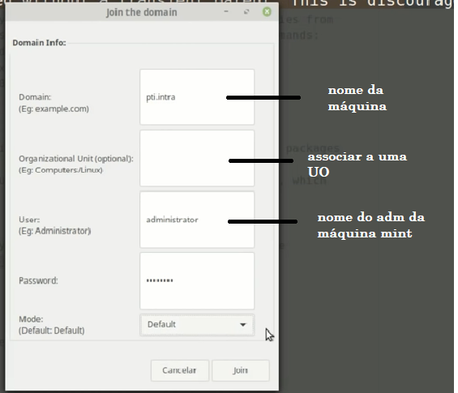
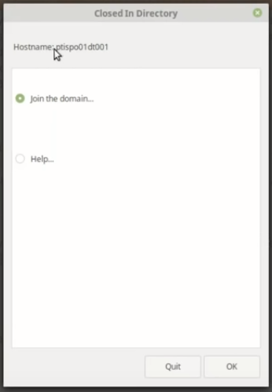
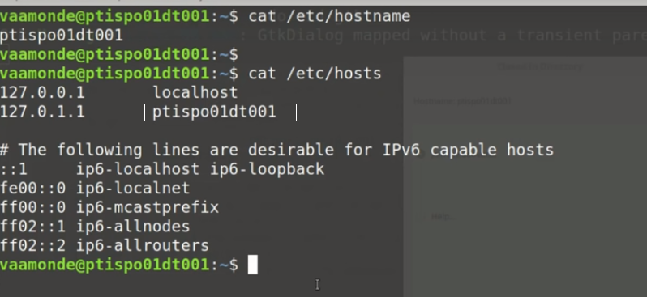
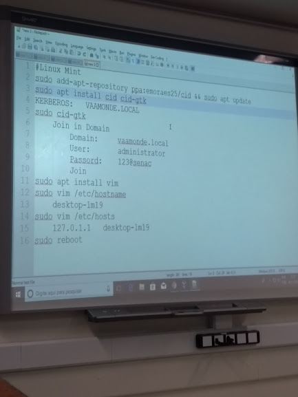

ARQUIVO pbisconfig (para ingressar linux mint)
Solução centrify -> (para ubunto - caso deseje instalar no mint há necessidade de alterações e arquivos confs)
método manual - ubunto e mint
Procedimento manual de ingressar máquinas no domínio: https://www.starwindsoftware.com/blog...
- desenvolvido na linguegem shell ou utilizando arquivos
SOFTWARE CID (para ingressar máquinas linux no domínio)
Tem ambiente gráfico e pode ser usado por linha de comando. Permite ingressar máquinas utilizando o código fonte e tem suporte para várias plataformas diferentes. Ele permite que pelo nosso controlador de domínio (tanto no Samba quanto no WSerever) possamos customizar scripts de logon desenvolvido na linguagem shell ou usando arquivos xml, permite também fazer a instalação automática das impressoras utilizando srv Cups.
- para instalarmos cliente do Sid: >> sudo apt update >> sudo apt upgrade >> sudo apt dist-upgrade (manter o kernel atualizado e todas as aplicações) >> sudo apt autoremove (remover todos os softwares desnecessários) - acesse o site do CID CID Closed in Directory: https://sourceforge.net/projects/c-i-d/ FILES Podesmos utilizar o código fonte, baixá-lo e fazer a compilação. No caso do Linux Mint, podemos utilizar o ppa do próprio projeto. >> sudo add-apt-repository ppa:emoraes25/cid (adicionando o ppa) >> sudo apt update (atualizar as listas do apt pois o novo ppa faz partes das listas) >> sudo apt-get install cid cid-gtk (instalando os dois aplicativos, o cid por linha de comando e o cid-gtk que é o ambiente gráfico) ENTRAMOS NA PARTE DA CONFIGURAÇÃO DO KERBERUS (TÍCKETS DE ATUALIZAÇÃO DO DOMÍNIO) o nome realm tem que ser em letra maiúscula (acho que é LITAH.LOCAL) >> sudo cid-gtk (tela de configuração para ingressar a máquina no domínio)
Todas as formas de instalar software no GNU/Linux: https://www.youtube.com/watch?v=j2-AE... BeyondTrust - PBIS-Open: https://github.com/BeyondTrust/pbis-o... Vídeo mostrando sua instalação nas versões antigas: https://www.youtube.com/watch?v=lLbvl... Centrify Express: https://www.centrify.com/express/linu... Vídeo mostrando sua instalação nas versões antigas: https://www.youtube.com/watch?v=jtP-R... Procedimento manual de ingressar máquinas no domínio: https://www.starwindsoftware.com/blog... UCS Univention Client: https://github.com/univention/univent... CID Closed in Directory: https://sourceforge.net/projects/c-i-d/
   